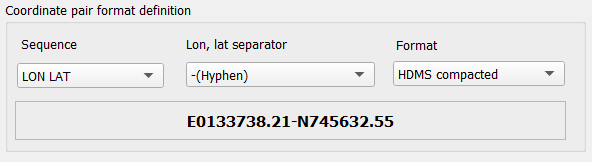
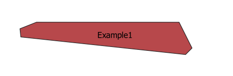

Plugin PlainTextToGeometry allows user swiftly extract coordinates from plain text and create points, lines or polygons.
It might be very useful in cases where there is a need to create spatial features based on textual description of geographic features as plain text, for example
from aeronautical publication such as eAIP (electronic Aeronautical Information Publication), NOTAM (Notice To AirMen) or any other data
with coordinates and this data is not
structurated well such as CSV or DAT files.
GitHub repository: PlainTextToGeometry
To extract coordinates from plain text and create feature just:
Notice that when you set Sequence, Lon, lat separator, Format example of coordinates pair will be shown:
As a result following polygon has been created and added to map canvas:
